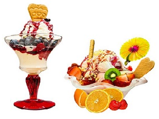

Filo Pastry
A delicous party made from filo sheets and wrapped in triangles, this is an enjoyable snack and suitable for parties. My mum likes to fill these with spinach and feta which is the scrumptious bit. Rating may vary from restaurant and where it is being made. Perfect for your pantry and parties anytime!
Summary of Filo Pastries
Rating:
Main Ingredients: Paste (also may vary, as homemade. spinach and feta), Milk Fat/ Butter and Filo Sheets
Recipes/Eateries/Foods to Filo Pastries